Space Robotics Lab · Tohoku University · Report 02
Moonwalk 2.0From the site to the pavement
Report 01 defined the block families. This report starts on the ground: it compares four candidate sites near the south pole, defines one hexagonal block, paves with it to manage dust, and raises the first wall and column from that pavement, tested in Isaac Sim.
▼ SCROLL TO THE SITE
01 · Orientation
Turning to the south pole
The Moon’s axis is tilted only about 1.5°. At the pole the Sun never climbs more than a few degrees: light arrives sideways, high ground can stay lit for most of the year, and low ground can stay dark for ever.
02 · The region
A field of old craters
Within 150 km of the pole: Shackleton, de Gerlache, Shoemaker, Faustini, Haworth, Sverdrup, Nobile, Cabeus and the Malapert massif. Their rims are the high ground; their floors are the low ground.
03 · Shadow
Floors that never see the Sun
The blue floors are permanently shadowed. Orbital measurements found some of them below 40 K, cold enough to hold water ice for billions of years. LCROSS confirmed water when it struck Cabeus in 2009.
04 · Light
The ridge that stays lit
The ridge that runs from the rim of Shackleton towards de Gerlache catches the low Sun for most of the year; the best points are lit more than 80 % of the time. That is power for the outpost, and a short haul to the ice.
05 · Candidate sites
Where to build
4Candidate regions compared below
15 × 15 kmSize of each NASA candidate region
2022 → 2024NASA narrowed its list from 13 to 9
6Criteria from the Moonwalk program
Connecting Ridge, de Gerlache Rim 2, Malapert Massif and Nobile Rim 1. The site analysis below scores them against the program’s rules.
Part A · Site and pavementWhere the outpost sits, and the first thing the robots build there: a flat pavement that manages dust.
01 · Site analysis
Four candidate sites at the south pole
The four candidates are NASA’s Artemis III candidate regions near the ridges of the pole. Each region is a 15 × 15 km square: the area NASA defined for a landing. It is not drawn around one building. The whole outpost has to fit inside it: power plant, quarry, landing pad and habitat.
Layers
Crater rim, true sizePermanently shadowed floor, schematicSunlit connecting ridgeCandidate region, 15 × 15 km (dashed: 2022 list only)
Connecting Ridge · NASA 2022 list only
de Gerlache Rim 2 · NASA 2024 list
Malapert Massif · NASA 2024 list
Nobile Rim 1 · NASA 2024 list
Click a square or a card below to select a site. Positions and diameters are approximate, taken from published polar maps; shadowed floors are drawn as a share of each crater, not traced. Check against LOLA and LROC maps before using any distance.
Each candidate, close up
Each map shows a 40 km window centred on the region. The letters place the outpost inside the square; the blue line runs to the nearest shadowed floor. Zoning is indicative, not surveyed.
PPower plant on the highest lit groundQQuarry and print yard, next to powerLLanding pad, 4–5 km from the mastsHHabitat, behind terrain
Comparing four candidates
Method
Six criteria from the program, weighted
Each criterion comes from a rule in the Moonwalk program. Each site gets a first-pass score: ● good (3), ◐ fair (2), ○ weak (1). The weights say how much each rule matters; change them and the total updates. Click a site name to centre the map on it and see its zoning and paving numbers.
First-pass result
–
With the default weights, de Gerlache Rim 2 scores highest. It keeps the light and ice of the ridge it ends, has more room for a pad than the narrow crest, and is on NASA’s current list. Nobile Rim 1 is close behind and Malapert wins on the Earth link. The Connecting Ridge has the best light but the least flat ground, and NASA dropped it in 2024.
These scores are a qualitative first pass from published summaries. The next step is to replace them with numbers from LOLA lighting, slope and Earth-visibility maps for each 15 × 15 km region.
Fun fact · paving –
How many blocks would it take?
Block size
Paving
Area
Blocks
Volume
Mass
Time to deliver · fleet of pavers, 4 min a block each
Paving
2 pavers
10 pavers
50 pavers
Swarm of 100
Printed regolith at 2,300 kg/m³, as in the Isaac Sim test. Plain hexagonal blocks; the graded edge changes these totals by less than 1 %. Robot time assumes every paver places one block every 4 minutes, around the clock, with no stops, no waiting for blocks and no crowding, so time falls in direct proportion to the fleet. A real swarm also needs printers that keep up (last row), power, charging and traffic control on the site.
Sources: NASA candidate regions for Artemis III, August 2022 (13 regions) and October 2024 (9 regions). To add to the reading list before citing: Mazarico et al. 2011 (polar illumination), Paige et al. 2010 (Diviner cold traps), Colaprete et al. 2010 (LCROSS).
02 · The block
One hexagon, five tilts
Five blocks make the whole family, and one number tells them apart: the tilt of the six side faces. At 0° the block is a plain hexagonal prism. As the tilt grows, the faces lean alternately in and out, three up and three down, until at 35.3° they are the faces of a cube standing on its corner. Every block keeps the same hexagonal cell, thickness and flat top. The size is now the full lunar block: 200 mm cube edge, 283 mm across, 100 mm thick, about 12 kg.
The family · steps 0 to 4
Drag to orbit · blue = the hexagonal cell of the selected block
Grading step
The five steps in numbers
Step
What it is
Side tilt
Top open as pockets
Pocket depth
Volume
Mass · regolith 2.3
Lab print · half size, PLA
Full-size lunar block at the thickness set above. Printed regolith at 2.3 g/cm³, as in the Isaac Sim tests. Pockets reach down to the mid-plane, where neighbouring blocks close up again.
Size, mass and the robot
Decision
The block fits one robot limb
The program gives about 12 kg per MoonBot limb at lunar gravity. A block made of regolith is still rock: its mass follows its size. Report 02 therefore sets the block at a 200 mm cube edge and 100 mm thickness, about 12 kg. Every number in Part A now uses this block.
Cube edge
Across the hexagon
Thickness
Volume
Mass · 2.3 g/cm³
Per limb (≈ 12 kg)
400 mm
566 mm
346 mm
72 L
≈ 166 kg
Over
400 mm
566 mm
115 mm
24 L
≈ 55 kg
Over
200 mm
283 mm
173 mm
9 L
≈ 21 kg
Over
200 mm
283 mm
100 mm
5.2 L
≈ 12 kg
Report block
200 mm
283 mm
58 mm
3 L
≈ 7 kg
Fits
Material
Printed or laser-formed regolith
Quarried on site and formed into blocks next to the power plant: 3D printed (bound or sintered), or laser-formed, where a laser beam melts and fuses the regolith into a solid block. The lab prints the same geometry in PLA at half size.
Fit
Shared faces, flat top
Neighbours with the same tilt share whole faces. At the top the faces part slightly at the corners, which opens the dust pockets.
Interlock
Tilt makes it lock
Tilted faces lean on their neighbours, three from above and three from below, so tilted blocks lock together. The 0° core does not lock: it rests on the ground. Isaac Sim confirms both (section 05).
Handling
Grip from the top or the side
Every block has the same flat top, so a top grip or suction cup works across the family. A side grip on the tilted faces is the other option. Both go into Isaac Sim next; the pockets are at the corners, so either grip stays clear of them.
The single block in Grasshopper
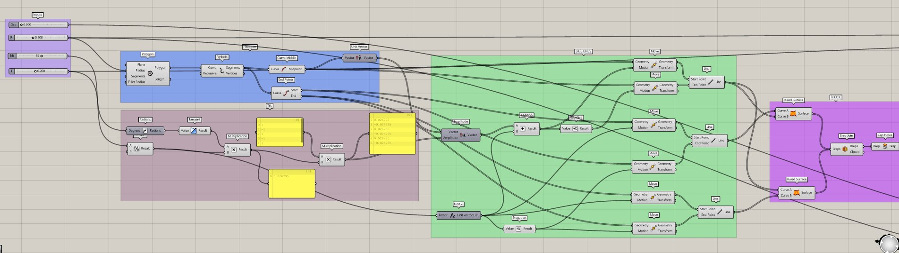
Grasshopper · the block from four sliders, in five groups: Inputs, Hexagon, Tilt, Side lines, Block
1 · InputsR, T, Tilt, Gap
Hexagon radius, thickness, side tilt, and the clearance passed on to the array.
2 · HexagonSix edges
Polygon of radius R, exploded into edges; the midpoint of each gives its outward direction.
3 · TiltAlternating offset
(T / 2) · tan(Tilt), times +1, −1, +1, −1, +1, −1: 0.0268 m for T = 0.2 m at 15°.
4 · Side linesLift and lean
Each edge is copied T / 2 up and pushed out (or in), and T / 2 down and pushed the other way.
5 · BlockClose the solid
A ruled surface between each top and bottom line, joined into one Brep and capped top and bottom.
Check
Same block, smaller pockets
This is the report's block: six side faces tilted alternately about mid-height, flat top and bottom. Its faces lie on the same planes, and a ring of six neighbours fits around it with no overlap at 15° or at the full 35.3° (checked numerically).
The difference is at the corners. The canvas builds each side face from its own edge, so the faces stop at the hexagon corners; closed flat, the corners fill in. The report's interactive model extends the faces until they meet instead, which leaves more open. At full tilt the report block (R 0.141 m, T 0.100 m) has pockets of about 2 % of its cell with this definition (11.6 kg) and about 8 % with the extended faces (11.0 kg). The sliders in the canvas (R 0.200, T 0.200) give the larger Wall A and Column A pavement block, about 21 L and 48 kg.
The canvas as one GhPython component. Inputs R, T, Tilt, Gap; outputs block, closed, info. The corners are closed with two flat triangles each, so the Brep is always a closed solid.
"""Moonwalk 2.0 · single block, tilt family (GhPython, Rhino 7/8)
Follows the Grasshopper canvas step by step:
Inputs -> R, T, Tilt, Gap
Hexagon -> Polygon (radius R, 6 sides), Explode, Curve Middle, Unit Vector
Tilt -> Radians, Tangent, (T / 2) x tan(Tilt), x [1, -1, 1, -1, 1, -1]
Side lines-> each edge moved up T/2 and out/in by the offset (top),
and down T/2 and in/out by the same offset (bottom)
Block -> Ruled Surface top-to-bottom for each side, Brep Join, Cap Holes
The side faces stop at the hexagon corners, so each corner is closed here with two
flat triangles that meet at the mid-height vertex. That keeps the Brep a closed solid
for every tilt (check the 'closed' output) and fits the neighbours without overlap.
Inputs : R float hexagon radius = side, m (0.141 = report block, 0.200 = Wall A / Column A pavement)
T float thickness, m (0.100 = report block, 0.200 = Wall A / Column A pavement)
Tilt float side-face tilt, deg (0 = prism ... 35.26 = tilted cube)
Gap float clearance, m; passed on to the array step, not used inside one block
Outputs: block Brep, centred on the origin, mid-plane at z = 0
closed bool, True when the Brep is a closed solid
info str, volume and mass at 2,300 kg/m3
"""
import math
import Rhino.Geometry as rg
tol = 0.0001
h = T / 2.0
off = h * math.tan(math.radians(Tilt)) # the 0.026795 values for T = 0.2, Tilt = 15
signs = [1, -1, 1, -1, 1, -1]
hexagon = rg.Polyline([rg.Point3d(R * math.cos(k * math.pi / 3), R * math.sin(k * math.pi / 3), 0) for k in range(7)])
edges = hexagon.GetSegments() # Explode
faces, tops, bots = [], [], []
for k, e in enumerate(edges):
mid = e.PointAt(0.5) # Curve Middle
n = rg.Vector3d(mid.X, mid.Y, 0); n.Unitize() # Unit Vector, outward
up = rg.Vector3d(0, 0, h) + n * (signs[k] * off)
dn = rg.Vector3d(0, 0, -h) - n * (signs[k] * off)
top = rg.Line(e.From + up, e.To + up) # Move + Line
bot = rg.Line(e.From + dn, e.To + dn)
tops.append(top); bots.append(bot)
# Ruled Surface: the side face, with its two mid-height points kept as vertices so the corner triangles join cleanly
side = rg.Polyline([top.From, top.To, e.To, bot.To, bot.From, e.From, top.From])
faces.extend(rg.Brep.CreatePlanarBreps(side.ToNurbsCurve(), tol))
for k in range(6): # close each corner: two triangles through the mid-height vertex
v = edges[k].To
a, b = tops[k].To, tops[(k + 1) % 6].From
c, d = bots[k].To, bots[(k + 1) % 6].From
if a.DistanceTo(b) > tol:
faces.append(rg.Brep.CreateFromCornerPoints(a, v, b, tol))
faces.append(rg.Brep.CreateFromCornerPoints(c, d, v, tol))
for ring in (tops, bots): # Cap Holes: top and bottom faces
pts = []
for ln in ring:
pts += [ln.From, ln.To]
pts.append(pts[0])
faces.extend(rg.Brep.CreatePlanarBreps(rg.Polyline(pts).ToNurbsCurve(), tol))
joined = rg.Brep.JoinBreps([f for f in faces if f], tol) # Brep Join
block = joined[0] if joined else None
if block and not block.IsSolid:
block = block.CapPlanarHoles(tol) or block
closed = bool(block and block.IsSolid)
vol = block.GetVolume() if closed else 0.0
info = "Volume %.2f L | mass %.1f kg at 2300 kg/m3 | closed %s" % (vol * 1000, vol * 2300, closed)
The pad generator, component by component
1 · PolygonHexagonal cell
Side s = a / √2 = 141 mm for a 200 mm cube edge.
2 · Plane, rotateSix side planes
Each through a cell edge at mid-height, tilted by θ: up, down, up, down…
3 · PlaneTop and bottom
Two horizontal planes T / 2 above and below the mid-plane.
4 · Brep from planesClose the block
Intersect the eight half-spaces into one solid.
5 · Hexagonal gridGrade the tilt
Ring distance → step 0–4 → θ = step × 35.26° / 4.
6 · BakePad and pockets
Blocks on graded_pad; pocket corners as points for the magnets.
Parameter
Symbol
Value
What it controls
Cube edge
a
200 mm
Cell size: hexagon side s = a / √2 = 141 mm, 283 mm across corners
Thickness
T
100 mm
Same for every block; with a, sets the mass (≈ 12 kg)
Paste into a GhPython component; inputs a, T, R, band, tilt_max. Outputs blocks, pocket corners (magnet positions) and the tilt step of each block.
"""Moonwalk 2.0 · graded pad, tilt family (GhPython, Rhino 7/8)
Every block fills one hexagonal cell and has the same flat top and thickness.
Only the tilt of its six side faces changes: 0 deg = hexagonal prism (closed core),
35.26 deg = the tilted cube (edge rings). Faces alternate up / down, so neighbours
share their faces and small triangular pockets open on the top surface.
Inputs : a float cube edge, mm (200 = full-size lunar block)
T float pavement thickness, mm (100)
R int rings around the centre block
band int graded rings at the edge
tilt_max float tilt of the outer ring, deg (35.26 = full cube)
Outputs: blocks list of Breps, underside at z = 0, flat top at z = T
pockets list of Point3d, pocket corners on the top surface (magnet positions)
step list of int, 0 = prism ... 4 = full tilt
"""
import math
import Rhino.Geometry as rg
tol = 0.001
s = a / math.sqrt(2) # hexagon side = mid-plane section of the cube
apo = s * math.sqrt(3) / 2.0 # hexagon apothem
d = 2 * apo # centre-to-centre spacing
phi = math.radians(-45.0) # grid angle; match your cube orientation if it differs
def planes(tilt):
"""Six side planes (n, c) with n·p <= c, plus top and bottom; mid-plane at z = 0."""
t = math.radians(tilt)
P = []
for k in range(6):
ang = phi + math.pi / 6 + k * math.pi / 3
sg = 1 if k % 2 == 0 else -1
n = (math.cos(t) * math.cos(ang), math.cos(t) * math.sin(ang), sg * math.sin(t))
P.append((n, math.cos(t) * apo))
P.append(((0, 0, 1), T / 2.0))
P.append(((0, 0, -1), T / 2.0))
return P
def solve(p1, p2, p3):
(a1, b1, c1), d1 = p1; (a2, b2, c2), d2 = p2; (a3, b3, c3), d3 = p3
det = a1 * (b2 * c3 - b3 * c2) - b1 * (a2 * c3 - a3 * c2) + c1 * (a2 * b3 - a3 * b2)
if abs(det) < 1e-9:
return None
x = (d1 * (b2 * c3 - b3 * c2) - b1 * (d2 * c3 - d3 * c2) + c1 * (d2 * b3 - d3 * b2)) / det
y = (a1 * (d2 * c3 - d3 * c2) - d1 * (a2 * c3 - a3 * c2) + c1 * (a2 * d3 - a3 * d2)) / det
z = (a1 * (b2 * d3 - b3 * d2) - b1 * (a2 * d3 - a3 * d2) + d1 * (a2 * b3 - a3 * b2)) / det
return (x, y, z)
cache = {}
def block(tilt):
key = round(tilt, 2)
if key in cache:
return cache[key]
P = planes(tilt)
verts = []
for i in range(len(P)):
for j in range(i + 1, len(P)):
for k in range(j + 1, len(P)):
v = solve(P[i], P[j], P[k])
if v and all(n[0] * v[0] + n[1] * v[1] + n[2] * v[2] <= c + 1e-6 for n, c in P):
if not any(abs(v[0] - w[0]) + abs(v[1] - w[1]) + abs(v[2] - w[2]) < 1e-4 for w in verts):
verts.append(v)
faces = []
for n, c in P: # one planar face per plane
on = [v for v in verts if abs(n[0] * v[0] + n[1] * v[1] + n[2] * v[2] - c) < 1e-4]
if len(on) < 3:
continue
cx = sum(v[0] for v in on) / len(on); cy = sum(v[1] for v in on) / len(on); cz = sum(v[2] for v in on) / len(on)
pl = rg.Plane(rg.Point3d(cx, cy, cz), rg.Vector3d(*n))
def ang(v):
ok, u, w = pl.ClosestParameter(rg.Point3d(*v))
return math.atan2(w, u)
on.sort(key=ang)
pts = [rg.Point3d(*v) for v in on] + [rg.Point3d(*on[0])]
faces.extend(rg.Brep.CreatePlanarBreps(rg.Polyline(pts).ToNurbsCurve(), tol))
b = rg.Brep.JoinBreps(faces, tol)[0]
corners = [] # top corners of the cell the block does not reach = pockets
for k in range(6):
hx = 0.999 * s * math.cos(phi + k * math.pi / 3); hy = 0.999 * s * math.sin(phi + k * math.pi / 3)
if any(n[0] * hx + n[1] * hy + n[2] * (T / 2.0 - 0.01) > c + 1e-3 for n, c in P[:6]):
corners.append((hx / 0.999, hy / 0.999))
cache[key] = (b, corners)
return cache[key]
a1 = phi + math.pi / 6
v1 = rg.Vector3d(d * math.cos(a1), d * math.sin(a1), 0)
v2 = rg.Vector3d(d * math.cos(a1 + math.pi / 3), d * math.sin(a1 + math.pi / 3), 0)
blocks, pockets, step, seen = [], [], [], set()
for q in range(-R, R + 1):
for r in range(-R, R + 1):
ring = max(abs(q), abs(r), abs(q + r))
if ring > R:
continue
g = 1.0 - min(1.0, (R - ring) / float(band))
g = g * g * (3 - 2 * g)
L = int(round(g * 4))
brep, corners = block(L / 4.0 * tilt_max)
c = v1 * q + v2 * r
dup = brep.DuplicateBrep()
dup.Transform(rg.Transform.Translation(c.X, c.Y, T / 2.0))
blocks.append(dup)
step.append(L)
for hx, hy in corners:
key = (round(c.X + hx, 1), round(c.Y + hy, 1))
if key not in seen:
seen.add(key)
pockets.append(rg.Point3d(key[0], key[1], T))
03 · Pavement methodology
One flat pavement, graded for dust
The pad is laid ring by ring from the centre. The core uses 0° blocks: plain hexagons that close into a flat, gap-free surface. Towards the edge the tilt rises step by step to 35°. The surface stays flat, but where the tilted faces part at the corners, small triangular pockets open between the blocks. Each pocket holds an electromagnet that pulls in the dust left on the surface, and the tilted rings lock the edge of the pad.
Graded pad · tilt 0° in the core to 35° at the edge · 200 mm block
Drag to orbit · blue = electromagnets · dark specks = dust
Rhino model graded_pad_v01 · top, perspective from below, front and side views
One cell, one top plane
Every block fills its hexagon and shares the same top. Nothing on the pad stands higher than anything else.
Closed where things land
The core is plain 0° hexagons: no pockets under landing legs, wheels or robot feet.
Pockets grow towards the edge
The tilt rises over the graded rings in four steps, so the pockets grow from a crack to a clear opening, and the rings lock harder.
04 · Paving for dust management
Pave first, then collect what is left
Dust is handled in two steps. First the pavement itself: once the regolith is covered by locked blocks, wheels, feet and landings no longer dig into loose ground, so far less dust is lifted. Second, pavement does not make a dust-free zone. The grains that still land or drift across the surface are collected into the small holes, where electromagnets in the hole floors pull them in and hold them.
Schematic section, not to scale in time: grains hop farther and faster than real lunar dust so the motion reads. Switch the magnets off to see grains stay loose on the surface; switch them back on and nearby grains are pulled in. The magnet reach drawn here is a placeholder until the bench test measures it.
Step 1 · Pavement
Cover the source
Locked blocks over compacted ground. Wheels and feet run on a hard surface instead of loose regolith, so most of the dust is never lifted.
Step 2 · Holes
A place for what is left
Pavement is not dust-free. Grains from landings, hauling and the surroundings still settle. The tilted edge blocks give them small V-shaped pockets to fall into, away from where robots work.
Step 3 · Magnets
Pull it in
An electromagnet in every hole floor. Lunar dust carries tiny grains of metallic iron, so much of it responds to a magnetic field. Switched on, the magnets draw grains in and hold them.
Step 4 · Maintainer
Empty the holes
The third robot works the collector field: magnets off, holes vacuumed or tipped into its hopper, magnets back on. The core stays closed and is only swept.
Compact the ground
Level and compact the site so every block beds evenly and the top plane stays flat.
Two pavers, core outwards
Paver 1 and paver 2 take one half each, ring by ring from the centre (see "Paver robot" colours above).
Collector rings last
The tilted blocks go in on the outer rings, each pocket with its magnet seat.
Power the magnets
Cable path under the blocks from the mast power plant. Its route and the magnet duty cycle are still to design.
Maintainer loop
After each landing or haul, the maintainer sweeps the core outwards and empties the full holes.
Measure in sim
Isaac Sim particle test: dust lifted with and without pavement, share caught by the holes, magnet range needed.
Magnet strength, range and power, and how much of the local dust responds to them, are not measured yet. They are the first questions for the particle test and for a bench test with lunar simulant.
05 · Isaac Sim validation
Does the pavement carry itself?
The block geometry goes from Grasshopper to Isaac Sim as JSON and is loaded into a lunar physics scene (1.62 m/s², printed regolith, assumed friction). The first test, run on 5 October 2026, holds a pad only at its rim. The structures built on the pavement are tested in Part B.
Pad tests
Two pads exported from Grasshopper and loaded into Isaac Sim with no ground under them. Only the blocks of the outer rim are held (more than 2.7 m from the centre); every other block is free to fall. Lunar gravity, printed regolith at 2,300 kg/m³, friction 0.7 / 0.6.
Pad
Blocks
Tilt
Result with only the rim held
Reading
A · graded
267 (211 free)
0° core, tilted rings
Core falls out
The tilted rings hold each other; the 0° prisms in the core have nothing to lean on and drop through.
B · full tilt
211 free
35° everywhere
Holds completely
211 of 211 free blocks settled under 5 mm; none moved more than 5 mm (max 0.0 mm).
Pad A, graded · rim held only · the 0° core drops out, the tilted rings stand · lunar gravity, 5 sPad B, full tilt 35° · rim held only · all 211 free blocks stay in place · lunar gravity, 5 s
Isaac Sim recordings at 1.62 m/s². Nothing under the pad: only the outer ring is fixed. The clips loop; pause them with the controls.
What it means
Tilt is a dial, set by zone
High tilt gives a pavement that carries itself and cannot be pulled apart: for spans over uneven or soft ground, and as an anchor. Low tilt gives a flat, smooth surface with closed joints, which needs ground support. The graded pad uses both on purpose: a closed 0° core bedded on compacted ground, locked in by tilted rings that also open the dust pockets.
Part B · StructuresHow vertical elements are grounded in the pavement; Wall A and Column A, built from the same hexagonal blocks and tested in Isaac Sim; and the shell that builds without centering.
06 · Grounding
Where the vertical meets the pavement
Every vertical element starts in the pavement, not on top of it. Under the first course sit plinth blocks: hexagonal prisms with the footprint and thickness of one pavement cell. They take the place of pavement blocks, so the tilted pavement around them holds them on every side like any other cell, and the wall or column above stands on a block that is part of the pavement.
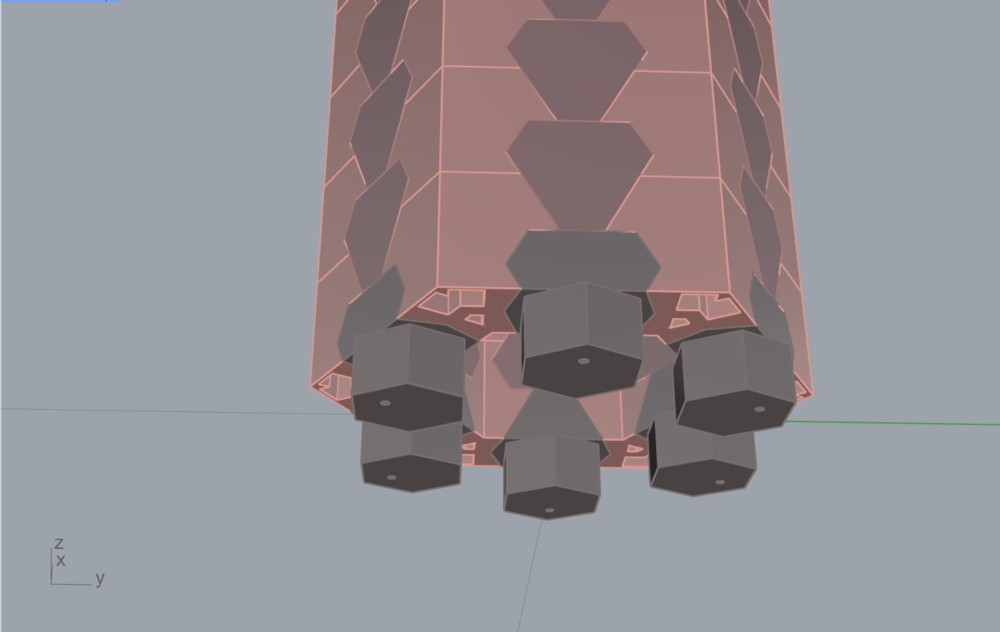
Column A from below, pavement hidden · the six plinths under the corners of the ring
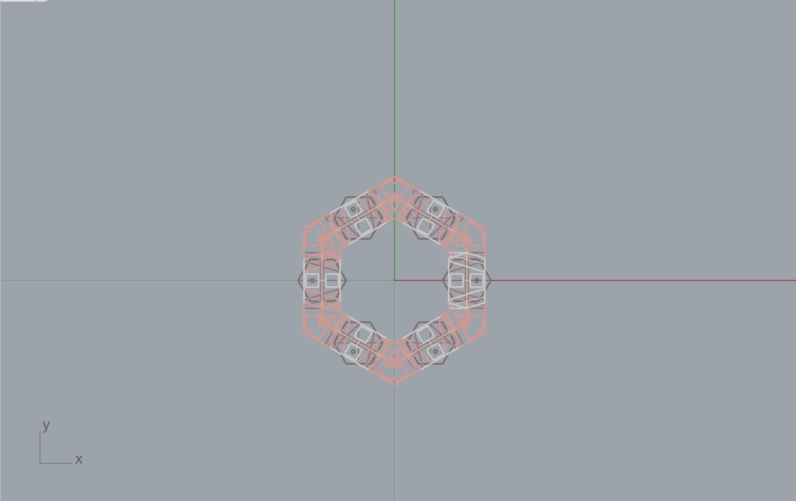
Plan at plinth level · each plinth sits on a pavement cell centre
Same cell, same grid
No cut blocks
A plinth is one pavement cell. The block column pitch equals the pavement pitch (0.346 m), so every plinth lands on a cell centre and the pavement closes around it with standard blocks.
Laid with the pavement
Placed by the paver
Plinths go in during paving, before the first course. The paver sets them like any other cell; the structure then starts on a level base that is already locked into the ground.
Load path
Into a wider area of ground
Weight and moonquake forces pass from the first course into the plinths, and through the interlocking pavement into the ground around. This is why every Isaac Sim test includes its pavement strip or pad.
Counts
Wall A 4 · Column A 6
Wall A stands on 4 plinths along its 44-block pavement strip; Column A on 6, one under each corner of the ring, in a 55-block pavement. The hole in each plinth's underside is reserved for an anchor or a service route, still to define.
The same rule applies to every element that rises from the pavement. The Horizon shell's rim ring (54 blocks, section 09) is the next element to ground this way.
07 · Wall A
A wall from the pavement block
Wall A is built from the same hexagonal block family as the pavement, stood up into courses. The side faces tilt in alternating directions, so each course locks into the one below the way the pavement blocks lock to their neighbours, and the small triangular pockets show on both faces. The column pitch equals the pavement pitch (0.346 m), so the wall lands on the pavement grid without cut blocks. Plinth blocks (orange) set into the pavement carry it (see 06); cap blocks (blue) close the top course.
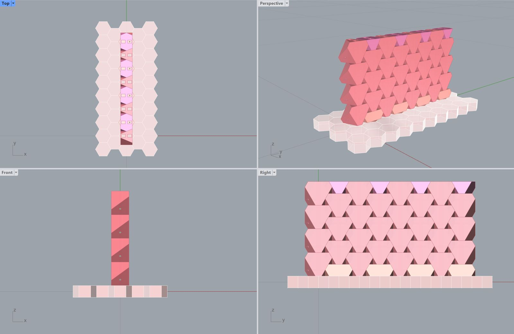
Rhino · Wall A on its pavement strip: plan, front, side and perspective
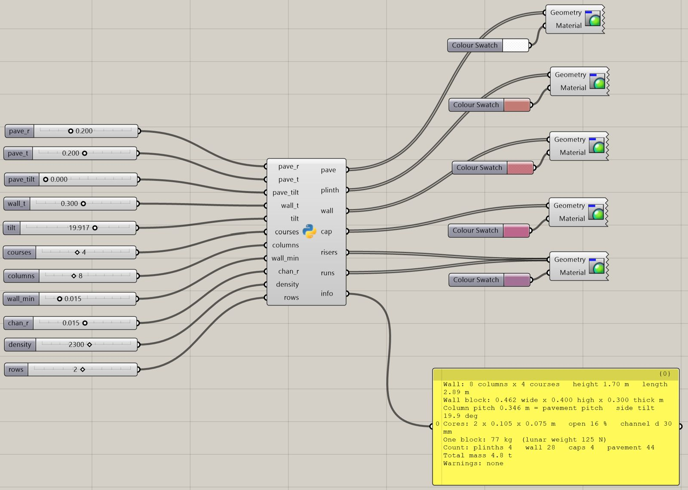
Grasshopper · one Python component, eleven sliders, six outputs plus a live info panel
Wall A · current definition
Value
Grasshopper input
Wall
8 columns × 4 courses · 2.89 m long · 1.70 m high
columns 8 · courses 4 · rows 2
Wall block
0.462 wide × 0.400 high × 0.300 thick m
wall_t 0.300
Side tilt
19.9°
tilt 19.917
Column pitch
0.346 m = pavement pitch
pave_r 0.200 · pave_t 0.200 · pave_tilt 0
Cores
2 × 0.105 × 0.075 m per block · 16 % open · service channel Ø 30 mm
wall_min 0.015 · chan_r 0.015
One block
77 kg · 125 N lunar weight
density 2,300 kg/m³
Count
4 plinths · 28 wall · 4 caps · 44 pavement
Total mass
4.8 t
The moonquake runs below used the earlier version from the test log (1.60 m high, 15° side tilt). The current definition has a steeper tilt and one more course height; it should be re-run before its limits are quoted.
Isaac Sim: moonquake test, eleven runs
Test setup
Value
Note
Gravity
1.62 m/s²
Lunar surface
Wall
2.89 m long · 1.60 m high · 0.30 m thick
4 courses, 8 columns, 15° side tilt, from Grasshopper
Blocks
2,300 kg/m³, cores empty
Printed regolith, assumed
Friction
0.7 static · 0.6 dynamic
Assumed regolith on regolith; to check in the literature
Gaps
Blocks shrunk to 0.996
About 1 mm per face so they start without overlap; 6.1 mm settling under gravity alone
Load
Steady sideways acceleration K × g, across and along the wall
Pseudo-static moonquake; K = 0 to 0.8
Limits
Overturning K = t / h = 0.19 · sliding K = 0.7
Overturning governs; "moved" means more than 10.1 mm
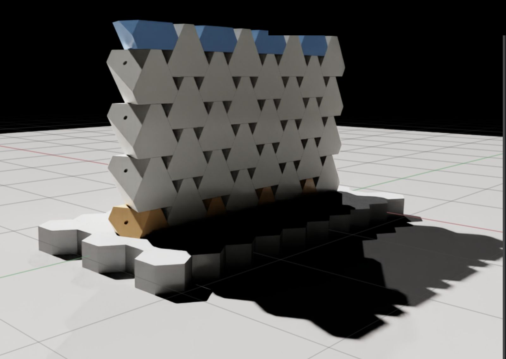
Isaac Sim · Wall A at rest on its pavement strip before the load is applied
Across the wall · K = 0.2 · the wall rocks over as one body · 10 sAlong the wall · K = 0.3 · the free end peels off column by column · 10 s
Results
K = sideways acceleration as a share of lunar gravity. Hover a cell for the observation. The orange note marks where the predicted overturning limit, t / h = 0.19, falls: between K = 0.1 and 0.2.
Across the wall
Held to 0.1, overturned from 0.2
The interlock held the blocks together and the whole wall rocked over as one body, close to the predicted t / h = 0.19. That is overturning, not a joint failure.
Along the wall
Held to 0.2, ends peeled from 0.3
The free zigzag ends unravelled column by column while the rest stood. The wall needs end blocks or end columns.
For the pavement
Anchor the wall to the pad
The next design step ties the wall into the pavement under its plinths, adds buttresses or Column A at the ends, or curves the wall in plan.
Before quoting a limit
Check real moonquakes
Compare these K values with ground accelerations from the Apollo seismic records before choosing a design value.
08 · Column A
A hollow column on a pavement plinth
Column A closes the same wall block into a ring: twelve block columns around a hexagon, corner blocks at the six angles and side blocks between them, six courses high, standing on six plinths set into its pavement (see 06). The hollow core is filled with loose regolith as ballast and stays open at the top for services. It stands on a pavement of the same hexagonal blocks, two rings wider than the column.
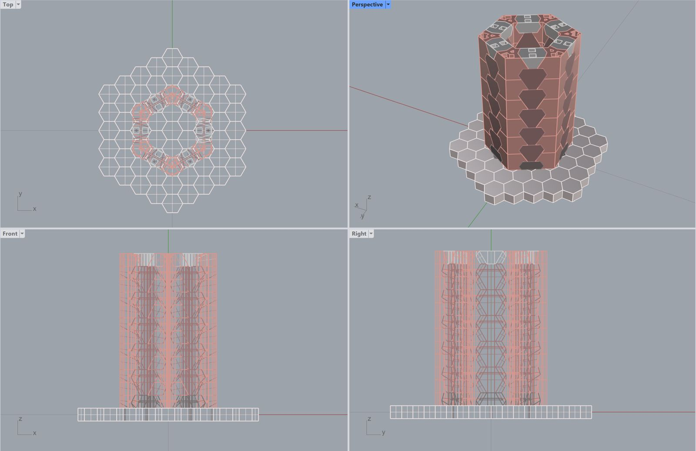
Rhino · Column A by layer: pavement, plinth, wall, corner, cap, fill and service
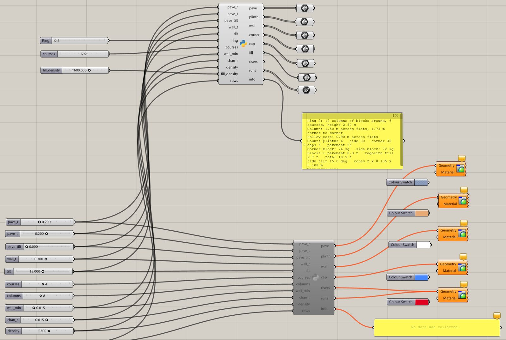
Grasshopper · the column component reuses the wall parameters and adds ring, courses and fill density
Blocks and pavement 8.3 t · regolith fill 2.7 t · total 10.9 t
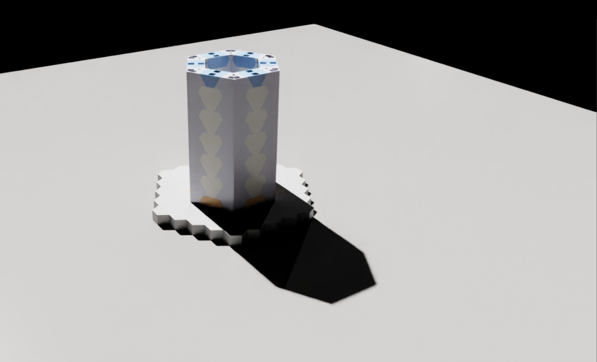
Isaac Sim · Column A standing on its pavement under lunar gravity
Isaac Sim: moonquake test
Load
Result
Reading
Lunar gravity only
Stands
The ring stands on its plinths and keeps its shape.
Very strong moonquake · K = 0.5
Shakes apart
The ring opens and the blocks are thrown off the pad.
Very strong moonquake · K = 0.8
Shakes apart
As at K = 0.5.
Column A · very strong moonquake · run 1 · 10 sColumn A · very strong moonquake · run 2 · 10 s
First runs. The physics settings (contacts and solver) are being tuned; the results will be updated with the next runs.
09 · Horizon shell
A shell that builds without centering
The shell now uses the same hexagonal block as the pavement, the wall and the column. A pad of tilted blocks is mapped onto a spherical cap, 8 m across and 2.5 m high. Each block keeps its six alternately tilted faces, so it leans on its neighbours as it does in the pavement, and a ring of rim blocks seats the shell at its base. The aim is a shell that carries itself while it grows, with no form or scaffold (centering) to hold it. The flat version of this is pad B in section 05: tilted blocks, held only at the rim, and every block stayed in place.
Horizon shell · hexagonal tilt blocks
Drag to orbit · beige = rim ring, built first · white = shell, closing at the crown
Size · lunar
Block
A quick explorer, not the Grasshopper definition: the flat hexagonal pattern is laid on the sphere with an equal-area mapping, so block counts differ a little from the definition below (265 at 8 m × 2.5 m). Rise is capped at a hemisphere. Mass at 2,300 kg/m³.
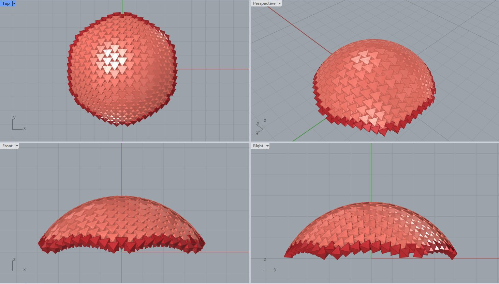
Rhino · the shell in plan, perspective, front and side; darker blocks = rim ring
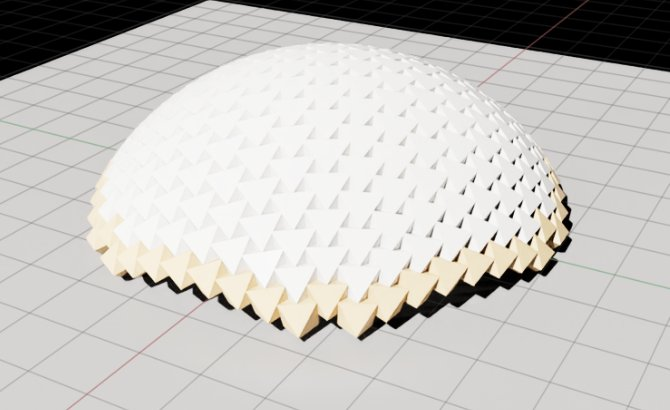
Isaac Sim · the shell loaded into the lunar scene; first test runs to follow
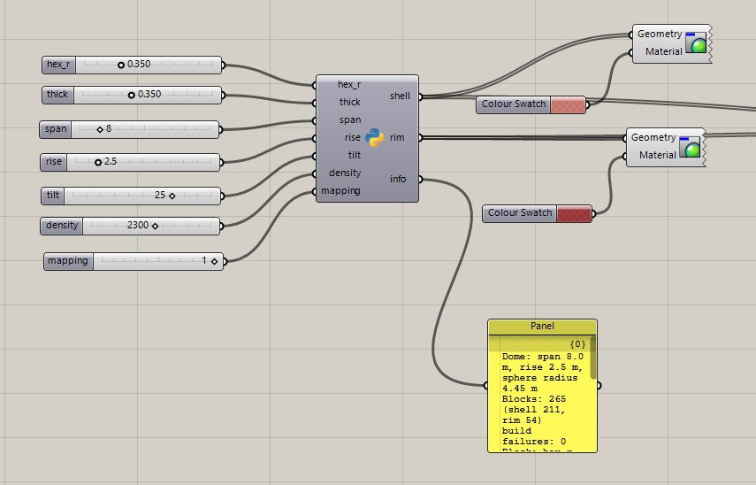
Grasshopper · one Python component: seven sliders in, shell and rim blocks out, with a live info panel
Horizon shell · current definition
Value
Grasshopper input
Shell
Span 8.0 m · rise 2.5 m · sphere radius 4.45 m
span 8 · rise 2.5
Blocks
265: 211 shell, 54 rim · 0 build failures
Block
Hexagon radius 0.35 m · 0.35 m thick · 25° side tilt
hex_r 0.350 · thick 0.350 · tilt 25
Mapping
Option 1
mapping 1
Floor
About 50 m² inside · shell surface about 70 m²
One block
About 250 kg
density 2,300 kg/m³
Shell mass
About 66 t
Floor area, block and shell mass are computed here from the definition's inputs (the same block geometry as section 02), not read from the Grasshopper panel.
Open question
Which block size for the shell?
At 0.35 m radius and 0.35 m thick, each shell block weighs about 250 kg: twenty times the 12 kg report block that one MoonBot limb can carry. The same 8 m shell in report blocks (0.141 m radius, 0.10 m thick) would take about 1,350 of them, but a shell that thin has not been tested.
The next Isaac Sim runs settle it: the shell under lunar gravity and moonquakes, built ring by ring without support, at both block sizes.
10 · Quick checks
What the Moon changes, and what it doesn't
A dry-stacked structure under its own weight stands or falls on geometry. Lower gravity scales every force down together, so the safety of the shape is the same on the Moon. What does not scale down is the push of the robot itself.
Arch shape
Ring thickness against radius
A semicircular arch of dry blocks stands under its own weight only if its ring is thick enough for a thrust line to fit inside it. The classical limit is a thickness of about 0.107 times the centreline radius. Gravity cancels out of this ratio.
–t / R, ring 100 mm thick (lab)
–largest span with t / R ≥ 0.107
The 0.107 figure is Heyman's minimum-thickness result for a semicircular arch. It is not in the current reading list; add it before citing. It gives no safety margin: a working design would aim for well above it.
Robot push
Side force that slides a block
A block with no keys slides when the robot pushes it sideways harder than friction holds it. Friction falls with gravity, but the robot's contact force does not. This is why the shear keys matter more on the Moon than in the lab.
–Earth · force to slide
–Moon · force to slide
Friction coefficient between printed regolith faces is an assumption; it is one of the measurements in the next steps.
11 · Next steps
From first tests to a planned build
What Report 02 leaves open, in the order it unlocks the rest: the site first, then the block, then the structures, then robots and the model that coordinates them.
1Assess the sites
Replace the first-pass scores with measured data for the four candidates: illumination, slope, roughness and distance to cold traps from LRO / LOLA maps, then choose one site.
2Plan the chosen site in detail
Lay out the pad, walls, columns and dome on the real terrain: slopes, access routes, landing distance, power and the cable route to the dust magnets.
3Test block density and weight
The 2,300 kg/m³ solid block is an assumption and looks overdesigned: wall blocks come out at 72 to 77 kg against 12 kg for the pavement block. Test printed, sintered and laser-formed regolith for real density, porosity and strength, and size the blocks to what a robot can carry.
4Measure friction and contact
Friction 0.7 / 0.6 is assumed in every Isaac Sim run. Tilt tests on printed samples give the real values to feed back into the simulation.
5Fix and re-run the structural tests
Tune the physics settings and run Column A across the full K range, re-run Wall A at its current 19.9° definition, add end columns or anchors to the wall, and compare K with Apollo seismic records.
6Test the Horizon shell
Run the shell in Isaac Sim under lunar gravity and moonquakes, build it ring by ring without support, ground its rim ring in the pavement, and settle the block size: about 250 kg in the current definition against 12 kg for the report block.
7Build the structures
Print blocks at lab scale, assemble a wall, a column and a pad section by hand, then by robot, and compare each step with the simulation.
8Moon environment in Isaac Sim
Terrain from the site elevation model, low sun angles and long shadows, a regolith ground model instead of a rigid plane, and dust particles.
9Robots and the robot–structure interface
Add the two pavers and the maintainer to the scene: top versus side grip on the blocks, placement accuracy, approach paths, and the forces a robot puts into a half-built structure.
104D BIM for robot operations
One model where every block is an element with a place in the build sequence: robot tasks and schedule, navigation paths and reachable zones as the structure grows, linked to Isaac Sim.
11Dust magnets
Particle test in Isaac Sim and a bench test with lunar simulant: how much dust the pockets collect, magnet reach and power, and how the maintainer empties them.
12Thermal and shielding
Day–night thermal cycling of dry joints, and the loose regolith cover over the dome for radiation shielding, with its extra load on the shell.